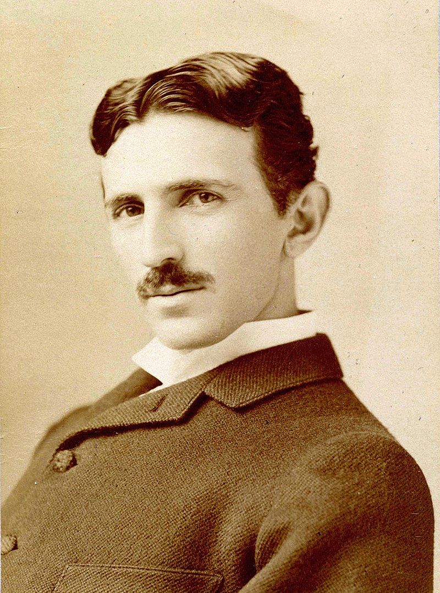

Нікола Тесла
1865-1943
Сербський та американський винахідник і фізик
Походив із сербської сім'ї, згодом став громадянином США. Тесла найбільш відомий своїми винаходами у галузі електрики, магнетизму та електротехніки. Зокрема йому належать винаходи змінного струму, поліфазової системи та електродвигуна зі змінним струмом. Був ключовою фігурою при побудові першої гідроелектростанції на Ніагарському водоспаді. Одиниця вимірювання магнітної індукції в системі SI названа на честь дослідника

Один з найівідоміших вчених світу
Біографія
1862 — року сім'я переїхала до Госпича, де Тесла вчився у гімназії
- 1880 — навчався у Карловому університеті в Празі
- 1881 — переїхав до Будапешта, де працював у телеграфній компанії
- 1882–1884 — працював у Парижі в Континентальній компанії Едісона
- 1884 — Тесла без суттєвих статків переїхав до Нью-Йорка
- 1888 — Тесла відкрив явище обертального магнітного поля, на основі чого побудував електрогенератори надвисокої частоти.
- 1896 — Теслі вдалося передати радіосигнал на відстань 48 км
- 1899 — створив у Колорадо-Спрінгз лабораторію для вивчення електричного потенціалу Землі
Більш детальну інформацію ви знайдите у
Wikipedia